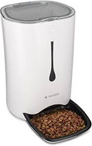

Probleem
Hallo, wij zijn Sam, Floor, Sander, Rens, Mathijs en Tom. Wij zitten op het Emmauscollege in 6VWO. Iedereen met een huisdier kent het probleem wel: je denkt een keer op zondagochtend lekker uit te slapen, maar je moet perse je bed uit om de hond eten te geven. Hoe fijn zijn het nou zijn als daar een oplossing voor zou komen. Bij deze demonstreren wij de automatische voederbak: de uitvinding van de eeuw.